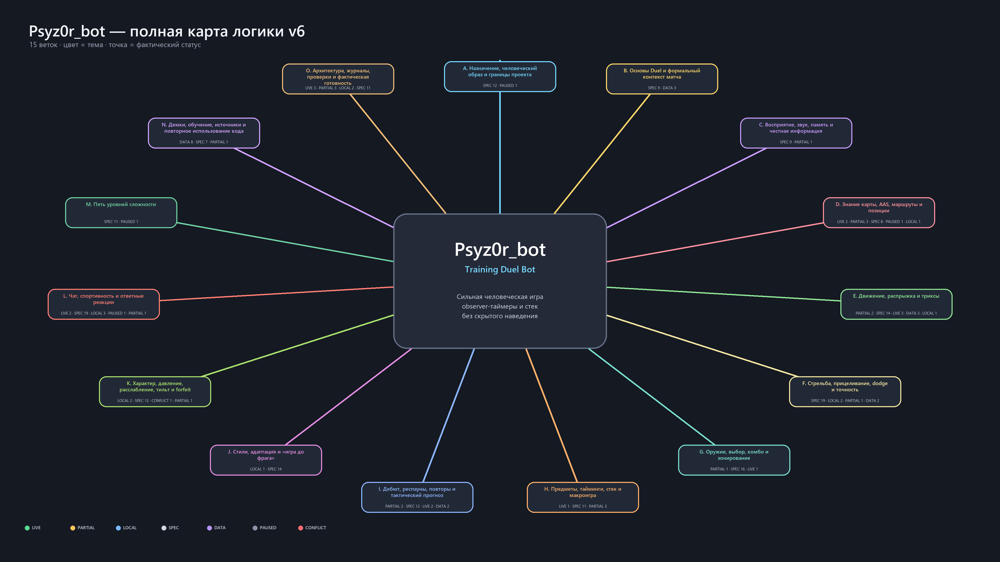

01.1 / ГЛУБИНА СВИДЕТЕЛЬСТВ
Требование ≠ работающий навык
Распределение документальных статусов правил. LIVE отражает прошлое наблюдение; это не процент готовности и не новый игровой тест.
Разработка тренировочного Duel-бота на основе штатного Quake Live AI.
Маршруты · контроль ресурсов · движение · человеческое исполнение.
Blood Run / ZTN
Test 27961 · основной 27960 изолирован
Распределение документальных статусов правил. LIVE отражает прошлое наблюдение; это не процент готовности и не новый игровой тест.
Observer-таймеры и стек разрешены. Скрытое наведение и знание будущего респауна не разрешены.
| Блок | Код | Игра | Свидетельство / следующий критерий |
|---|

По сохранённым меткам requested_players. Имя в архиве не доказывает личность. 100 уникальных демок Agent не подтверждены: в каталоге найдено 72 совпадения имени.
Общий максимум сольной демки владельца: 661.09 UPS. Он не равен скорости за первые 2–4 секунды после остановки.
Архивный анализ 500 демок: окна собственного LG-огня. Углы и скорость относительно взгляда; движения мыши и причинность доджа ракеты не восстанавливались.
Разные даты, версии, соперники и число таблиц: это описательная статистика, не доказательство относительной силы. Одна запись может содержать несколько строк статистики бота.